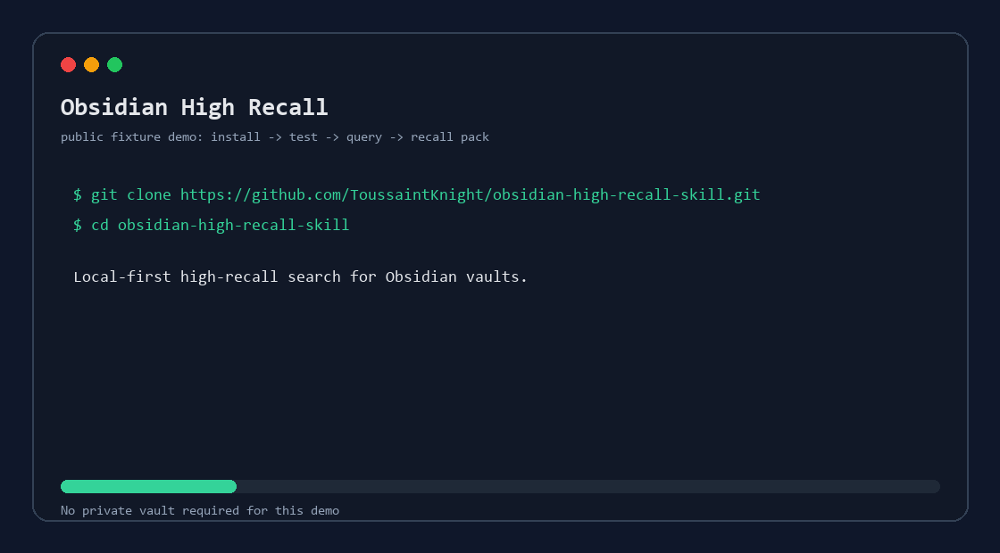
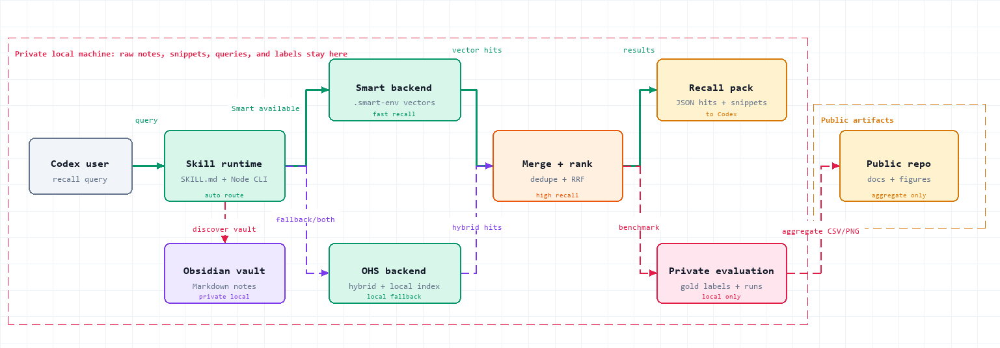

Recall over neatness
Broad result packs include snippets, ranks, channels, and scores so an agent can inspect more context instead of trusting one brittle hit.
Local-first Obsidian recall
Find the notes your AI agent or normal search would otherwise miss.
A recall-first search wrapper for large private Obsidian vaults. It reuses Smart Connections vectors when available, falls back to local hybrid/fulltext search, and returns broad context packs for Codex or CLI workflows.
The public fixture checks install, syntax, query execution, and recall metrics before anyone points the tool at private notes. If the fixture passes, try one broad real-vault query, report privacy-safe results, and star/watch the repo if it is useful.

git clone https://github.com/ToussaintKnight/obsidian-high-recall-skill.git
cd obsidian-high-recall-skill
npm test
node skills/obsidian-high-recall/scripts/obsidian_high_recall.mjs query \
"data collection for embodied AI robot demonstrations" \
--vault docs/fixtures/demo-vault \
--backend smart \
--limit 10Precision can be cleaned up downstream. A missed relevant note is harder to recover.
Broad result packs include snippets, ranks, channels, and scores so an agent can inspect more context instead of trusting one brittle hit.
The workflow reads local Markdown and writes derived runtime data outside the vault. Public artifacts contain aggregate/anonymized data only.
A small public vault and smoke test make the tool testable before users run it on a real knowledge base.
Codex, the vault, Smart vectors, OHS fallback, merge/rank, recall packs, and private evaluation stay local. GitHub receives only the portable skill, docs, and aggregate figures.

The current private-vault study uses 16 manually labeled recall tasks and reports anonymized aggregate metrics. It is meant to compare deployment choices, not to claim universal Obsidian search quality.
| Condition | Precision@20 | Recall@20 | F1@20 | MRR | Mean latency |
|---|---|---|---|---|---|
| Smart | 0.17 | 0.57 | 0.26 | 0.65 | 1.00s |
| OHS | 0.17 | 0.55 | 0.25 | 0.24 | 49.54s |
| RRF union | 0.18 | 0.61 | 0.28 | 0.61 | 50.54s |
Run the fixture first, then try one broad query on your own vault. Report OS, Node version, Obsidian setup, Smart Connections status, and whether it found notes you would have missed.